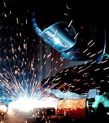

Сва́рка — процесс получения неразъёмных соединений посредством установления межатомных связей между свариваемыми частями при их местном или общем нагреве, пластическом деформировании или совместном действии того и другого[1]. Специалист, занимающийся сварными работами, называется сварщик.
Неразъёмное соединение, выполненное с помощью сварки, называют сварным соединением[1]. Чаще всего с помощью сварки соединяют детали из металлов. Однако, сварку применяют и для неметаллов — пластмасс, керамики или их сочетания.
При сварке используются различные источники
энергии: электрическая дуга, электрический ток, газовое пламя,
лазерное излучение, электронный луч, ультразвук. Развитие технологий позволяет в настоящее время
проводить сварку не только в условиях промышленных предприятий, но в полевых и монтажных условиях (в степи, в
поле, в открытом море и т. п.), под водой и даже в космосе. Процесс сварки сопряжён с опасностью возгораний;
поражений электрическим током; отравлений вредными газами; поражений глаз и других частей тела тепловым,
ультрафиолетовым, инфракрасным излучением и брызгами расплавленного металла.
Сварка осуществима при следующих условиях:
Первые способы сварки возникли у истоков цивилизации — с началом использования и обработки металлов. Изготовление металлических изделий было распространено в местах залегания железных руд и руд цветных металлов.
Первым сварочным процессом была сварка ковкой. Необходимость ремонта, выпуска более совершенных изделий приводила к необходимости разработки и совершенствованию металлургических и сварочных процессов.
Сварка с использованием электричества для нагрева металла появилась с открытием электричества, электрической дуги.
В 1802 году русский учёный Василий Петров обнаружил явление электрической дуги и опубликовал сведения о проведённых с дугой экспериментах.
В 1882 году Никола Тесла изобрёл способ получения переменного тока[2].
В 1881—1882 годах изобретатели Н. Н. Бенардос и Н. Г. Славянов, работая независимо друг от друга, разработали способ соединения металлических деталей с использованием сварки.
В 1905 году русский учёный В. Ф. Миткевич предложил использовать электрическую дугу, возбуждаемую трёхфазным током, для проведения сварки.
В 1919 году сварка с использованием переменного тока была изобретена Джонатан Холслаг (англ. C. J. Holslag)[2][3].
В XIX веке сварочные процессы усовершенствовали учёные Элиу Томсон, Эдмунд Дэви и др. В СССР в XX веке технологией сварки занимались Е. О. Патон, Б. Е. Патон, Г. А. Николаев. Советские учёные первыми изучили способы и особенности сварки в невесомости и применили сварку в космосе. Первую в мире сварку в условиях глубокого вакуума в космосе провели 16 октября 1969 года на корабле «Союз-6» космонавты Георгий Степанович Шонин и Валерий Николаевич Кубасов.
С конца 1960-х годов в промышленности начинают использоваться сварочные роботы. К началу XXI века роботизация сварочных работ приобрела весьма широкие масштабы[4][5].
В России вопросами сварки и подготовкой специалистов по сварке занимаются учебные институты: МГТУ им. Н. Э. Баумана (кафедра «Технологии сварки и диагностики»), МГИУ (Кафедра оборудования и технологии сварочного производства), ДГТУ (РИСХМ) (Каф. Машины и автоматизация сварочного производства), УПИ, ЧИМЭСХ, ЛГАУ, и другие. Выпускается научная литература и журналы по сварке[6].